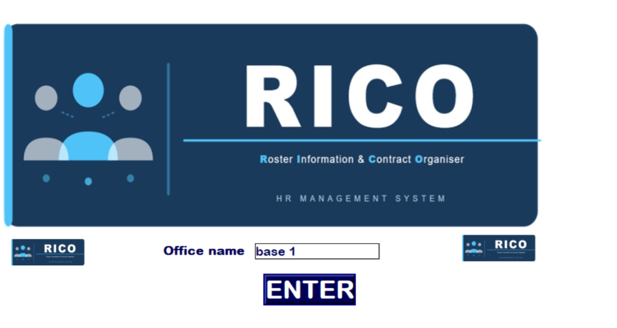
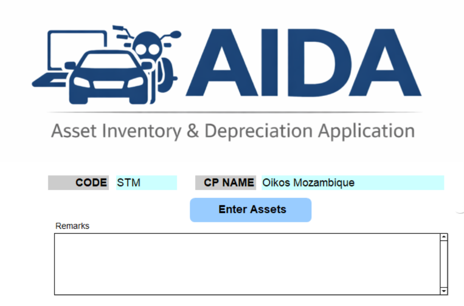
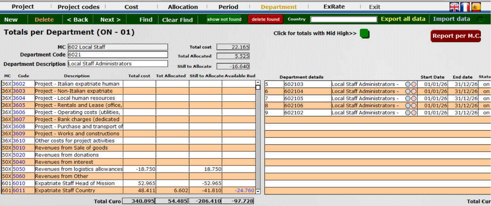
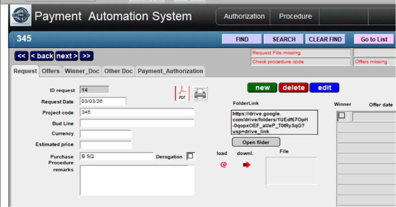

Built from field needs
The tools started from recurring operational questions, not from abstract product planning.
Personal toolkit for non-profit work
Practical tools for NGOs, Foundations and Project-Driven Organizations
Designed for organizations that prefer practical solutions over unnecessary complexity.
Developed in the field. Refined through practice. Shared with purpose.
A small family of tools shaped by real operational needs: budgets, projects, people, assets, procurement and reporting.
Why DESYNET exists
DESYNET is not a software company. It is a personal toolkit developed over years of collaboration with NGOs, foundations and project teams.
The tools started from recurring operational questions, not from abstract product planning.
They are made for project managers, administrators and coordinators who need clarity under pressure.
Organizations speak with Paolo, the person who built and maintains the tools.
Who DESYNET is for
Teams managing funded activities, reporting duties and field operations.
Organizations that need reliable project and cost information.
Smaller structures that need practical tools without corporate complexity.
Programs with procedures, procurement, budget lines and shared costs.
People who need to anticipate spending and detect issues early.
Teams coordinating contracts, attendance, assets, payments and documentation.

I never set out to build a software company. I developed these tools while supporting NGOs and project teams. Over time they proved useful to other organizations, and today I am happy to share them.
About Paolo
Paolo Gioffreda brings years of direct, practical experience supporting NGOs, foundations and project-based organizations. His expertise spans project accounting, financial coordination, procurement management, HR administration and reporting in non-profit environments.
The value of DESYNET is not only in the files or screens. It is also in the conversation: understanding how an organization works, what is difficult today, and which tool can genuinely help solve real operational challenges.
The DESYNET Toolkit
Each tool covers a practical area of non-profit operations. They can be discussed separately or combined according to the organization's workflow.

A practical base for following project accounts, budget lines, expenses and financial coordination across activities.
Learn more
Enables Project Managers to anticipate future spending, compare forecasts with available budgets and identify risks before they become problems.
Learn more
Supports allocation of shared costs and helps teams understand whether projects remain financially sustainable.
Learn more
Keeps staff information, contractual details and attendance records organized for administrative follow-up.
Learn more
Tracks equipment, assets and inventory in a way that supports project accountability and internal control.
Learn more
Helps keep procurement steps, documentation and procedural requirements visible and traceable.
Learn moreHow the tools connect
Resources
This area is prepared for the existing support material: Google Drive manuals, YouTube tutorials, downloads and FAQs.
Operational guides and notes for the DESYNET tools.
Open manualsShort videos for teams that need to learn or revisit a procedure.
Watch tutorialsSpace for runtime files, templates and tool packages.
Ask for filesCommon questions about setup, use, updates and suitability.
Ask a questionContact
If DESYNET can help, I will be happy to discuss the most suitable tools.